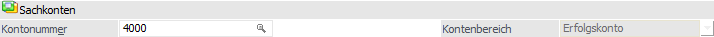
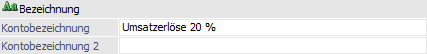
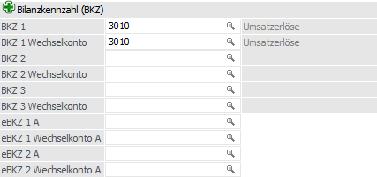
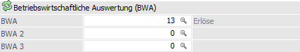
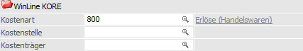
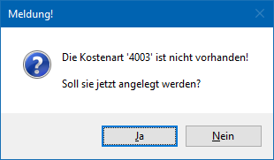
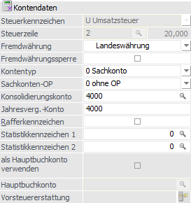
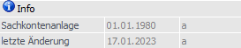

In dem Register "FIBU" des Sachkontenstamms werden alle wesentlichen Informationen verwaltet, welche speziell die Finanzbuchhaltung betreffen.
Hinweis
Weitere Informationen bezüglich der Anlage von Sachkonten und den Buttons des Programms "Sachkonten" sind dem Kapitel Sachkonten zu entnehmen.

Folgende Eingabefelder, Einstellungen und Informationen stehen zur Verfügung:
Sachkonten

Ø Kontonummer
mind. 3stellig, max. 20stellig, alphanumerisch. Die Kontonummer ist der Ordnungsbegriff für den Aufruf des Kontos und für die Reihung von Konten bei Auswertungen.
Ø Kontenbereich
Die Kontenart definiert die Funktion des Kontos in der Buchhaltung. Folgende Einstellungen stehen (bei der Anlage eines Sachkontos) zur Verfügung:
ü Bilanzkonto => in Aktiv/Passiv-Rechnung
ü Erfolgskonto => in Gewinn/Verlust-Rechnung
Achtung
Wurde die Kontenart einmal vergeben und das Konto gespeichert, kann diese nicht mehr verändert werden.
Bezeichnung

Ø Kontobezeichnung / Kontobezeichnung 2
An dieser Stelle kann die Bezeichnung des Sachkontos hinterlegt werden. Hierfür stehen 2 Zeilen mit je 255 Stellen (alphanumerisch) zur Verfügung.
Bilanzkennzahl (BKZ)

Ø BKZ 1 / BKZ 1 Wechselkonto / BKZ 2 / BKZ 2 Wechselkonto / BKZ 3 / BKZ 3 Wechselkonto
Hinterlegung der Bilanzgliederungs-Kennzahl (BKW). Die Position des Kontos in der Bilanz wird durch die Eintragung von zwei Bilanzgliederungskennzahlen festgelegt, wobei drei verschiedene Bilanzzuordnungen hinterlegt werden können. Welche Bilanzgliederung für die Bilanzauswertung verwendet wird, wird beim Bilanzdruck definiert.
Soll ein Konto unabhängig vom Wert des Saldos (Soll-Saldo/Haben-Saldo) einer fixen Bilanz-Position oder G & V-Position zugeordnet werden, so wird in den Feldern BKZ und BKZ Wechselkonto die gleiche BKZ eingetragen.
Ø Wechselkonten
Soll ein Konto abhängig von seinem Saldo unterschiedlichen Bilanz- oder G & V-Positionen zugewiesen werden (Wechselkonto), werden bei den Feldern BKZ und BKZ Wechselkonto unterschiedliche Werte eingetragen.
Hinweis
Sobald bei einem Konto ein Hauptbuchkonto eingetragen ist, werden die Einstellungen für BKZ und BKZ Wechselkonto vom Hauptbuchkonto automatisch übernommen. In diesem Fall sind die BKZ und BKZ Wechselkonto-Felder inaktiv und können nicht bearbeitet werden.
Ø eBKZ 1 / eBKZ 1 Wechselkonto / eBKZ 2 / eBKZ 2 Wechselkonto
Die Position des Kontos in der Elektronischen Bilanz wird durch die Eintragung von Kennzahlen festgelegt.
Wenn bei einem Konto unterschiedliche Einträge für eBKZ und eBKZ Wechselkonto gewünscht sind, kann dies nicht direkt in der e-Bilanz gemacht werden (beim Füllen des Trees wird nur die eBKZ berücksichtigt). Für eBKZ Wechselkonto muss der Kontenstamm oder der Schnellumstellungs-Assistent verwendet werden.
Hinweis
Sobald bei einem Konto ein Hauptbuchkonto eingetragen ist, werden die Einstellungen für eBKZ und eBKZ Wechselkonto vom Hauptbuchkonto automatisch übernommen. In diesem Fall sind die eBKZ und eBKZ Wechselkonto-Felder inaktiv und können nicht bearbeitet werden.
Betriebswirtschaftliche Auswertung (BWA)

Ø BWA / BWA 2 / BWA 3
Hier erfolgt die Hinterlegung der Betriebsanalysekennzahl für betriebswirtschaftliche Auswertungen. Die Anlage der BWA-Kennzahlen erfolgt im Menüpunkt "WinLine FIBU - Stammdaten - BWA-Stamm".
Hinweis
Im Gegensatz zu den BKZs werden die BWA Einstellungen des Nebenbuchkontos für Auswertung der BWAs verwendet.
WinLine KORE

Ø Kostenart
20stellig, alphanumerisch. Das Kostenartenkennzeichen ist bei Einsatz von WinLine KORE erforderlich. Die Eintragung im Feld Kostenart bewirkt, dass im Buchungsprogramm die Aufteilung des gebuchten Nettobetrages auf Kostenstellen vorgenommen werden muss.
Hinweis
Wenn in den KORE-Parametern (WinLine START - Parameter - Applikations-Parameter) die Option "Automatische Anlage von Kostenarten - Sachkonten-Stamm" aktiviert wurde, dann wird überprüft, ob die im Feld "Kostenart" eingetragene Kostenart auch tatsächlich angelegt ist. Ist dies nicht der Fall, so wird die folgende Meldung angezeigt:

Wird die Meldung mit "Ja" bestätigt, so wird das Kostenartenstammfenster in der WinLine KORE geöffnet und die Kostenart kann angelegt werden. Dabei wird die Bezeichnung von der Bezeichnung des aktuellen Sachkontos vorgeschlagen. Wird die Meldung mit "Nein" bestätigt, so muss in weiterer Folge eine gültige Kostenart eingetragen werden (oder das Feld bleibt leer).
Ø Kostenstelle
Hier kann für das Sachkonto eine Kostenstelle fix hinterlegen werden (20stellig, alphanumerisch).
Ø Kostenträger
An dieser Stelle kann für das Sachkonto ein Kostenträger fix hinterlegen (20stellig, alphanumerisch).
Berechtigung

Ø Berechtigung
Für jedes Sachkonto kann ein Berechtigungsprofil vergeben werden. Wenn der Anwender ein Sachkonto aufruft, wird geprüft, ob der Anwender einer Benutzergruppe zugeordnet wurde, welche in dem jeweiligen Profil enthalten ist und ob somit eine Bearbeitung erlaubt wäre (nähere Informationen entnehmen Sie bitte dem WinLine ADMIN - Handbuch).
Hinweis
Benutzern des Typs "Administrator" oder mit der Administratorenberechtigung "Benutzeradministrator" steht in der Auswahlbox der Punkt ">> Neues Profil" zur Verfügung. Über die Anwahl dieses Eintrags kann in der Folge ein neues Berechtigungsprofil angelegt werden.
Ø Inaktiv (seit)
Wenn ein Datensatz auf Inaktiv gesetzt wird, hat das vorerst nur die Auswirkung, dass er nicht mehr im Matchcode angezeigt wird. Durch einen Reorg kann dieser Datensatz aus der Datenbank entfernt werden. Voraussetzung dafür ist, dass für den Datensatz keine Bewegungsdaten (Buchungen etc.) vorhanden sind. Nähere Informationen zum Reorganisieren entnehmen Sie bitte dem WinLine START-Handbuch.
Kontendaten

Ø Steuerkennzeichen
An dieser Stelle erfolgt die Hinterlegung des U.V. Steuerkennzeichen. Das Steuerkennzeichen steuert die automatische Berechnung der Umsatzsteuer / Vorsteuer während des Buchens. Dieses Kennzeichen kann nicht mehr verändert werden, sobald das Konto bebucht wurde.
ü U Umsatzsteuer
ü V Vorsteuer
ü Keine Eingabe für Nettokonten
Hinweis
Während des Buchens kann bei Konten, welche mit Steuerschlüssel angelegt wurden, der Steuersatz verändert werden. Wurde das Konto ohne Steuerschlüssel angelegt, ist das Ändern des Steuersatzes während des Buchens nicht möglich.
Beispiele - Konten
Steuerkennzeichen werden z.B. bei den folgenden Konten eingetragen:
ü Warenerlöskonten
ü Wareneinkaufskonten
ü Skontoerlöskonten
ü Skontoaufwandskonten
ü Etc.
Die folgenden Konten erhalten in keinem Fall ein Steuerkennzeichen:
ü Zahlungsmittelkonten
ü Debitoren
ü Kreditoren
ü Etc.
Achtung
Wurde das Steuerkennzeichen falsch eingetragen, kann es nur bei unbebuchten Konten geändert werden. Wurde das Konto bereits bebucht, erfolgt die Korrektur durch Umbuchung des gewünschten Betrages auf ein korrekt angelegtes Konto.
Ø Steuerzeile
Eingabe der entsprechenden Zeile aus dem Unternehmensstamm. Wird eine Zeile eingetragen, die nicht im Unternehmensstamm angelegt wurde, wird die Eintragung mit einer Fehlermeldung abgewiesen.
Ø Fremdwährung
Hier erfolgt die Definition der Fremdwährungssteuerung, wobei 2 Varianten zu Verfügung stehen:
ü Landeswährung
Wird der erste
Eintrag aus der Auswahlliste (Landeswährung) gewählt, darf das Konto in jeder
Fremdwährung und in Landeswährung bebucht werden.
ü Bestimmte Währung
Wird eine
bestimmte Währung (z.B. US-Dollar oder Schweizer Franken) aus der Auswahlliste
gewählt, dann kann dieses Konto nur in jener Währung bebucht werden. Beim Buchen
wird automatisch das Fremdwährungsfenster mit der entsprechenden Währung
vorgeschlagen.
Hinweis
Wurde das Konto einmal mit dieser Fremdwährung bebucht, so kann die Fremdwährung nur mehr auf Landeswährung geändert werden. Wurde ein Konto bereits mit einer bestimmten Fremdwährung bebucht, kann nur mehr diese als Fremdwährung beim Konto hinterlegt werden.
Ø Fremdwährungssperre
Ist diese Checkbox aktiv, kann das entsprechende Konto nicht mehr in Fremdwährung gebucht werden. Ist die Checkbox deaktiviert, kann über das nächste Feld entschieden werden, welche bzw. wie viele Fremdwährungen verwendet werden können.
Ø Kontotyp
Aus der Auswahlliste kann gewählt werden, welcher Typ das Konto sein soll, wobei es 3 verschiedene Möglichkeiten gibt:
ü 0 - Sachkonto
Das Konto hat
keine weitere Funktion.
ü 1 - Anlagenkonto
Diese Option
steht nur bei Bestandskonten zur Verfügung. Dadurch wird, sobald dieses Konto im
Buchen (Dialog Stapel) oder im Buchen Eingangsrechnungen bebucht wird, das
Anlagenstammfenster der WinLine Anlagenbuchhaltung geöffnet, wo die neue Anlage
erfasst werden kann. Von der Buchung wird sowohl das Konto als auch der
Nettobetrag (= Anschaffungswert) übernommen.
ü 2 - Zahlungsmittelkonto
Diese
Option kann nur dann gesetzt werden, wenn keine Kostenart und kein
Steuerkennzeichen hinterlegt wurde. Zahlungsmittelkonten können beim
Kontenabgleich, beim Kassenbuch und beim Buchen Zahlungsmittelkonten verwendet
werden.
Ø Sachkonten-OP
Aus der Auswahlliste kann gewählt werden, ob für das Konto eine OP-Verwaltung durchgeführt werden soll oder nicht. Dabei gibt es wieder 3 Möglichkeiten:
ü 0 - ohne OP
Das Konto wird ohne
Offene Posten geführt.
ü 1 - mit OP im Soll
Die Offenen
Posten werden im Soll geführt.
ü 2 - mit OP im Haben
Die Offenen
Posten werden im Haben geführt.
Hinweis
Diese Auswahlliste ist nur dann aktiv, wenn in den FIBU-Parametern (WinLine START - Optionen - Applikations-Parameter - FIBU-Parameter - Bereich "Allgemein") die Option "Offene Posten für Sachkonten" aktiviert wurde.
Ø Konsolidierungskonto
Wenn eine konsolidierte Bilanz erstellt wird und dieses Konto im Hauptmandanten nicht angelegt ist, kann hier ein "Ersatzkonto" angegeben werden, auf welches die Summen dieses Kontos gerechnet werden sollen.
Dieses Feld dient außerdem zum Zuweisen eines Sachkontos zwischen Haupt und Submandanten und wird über die Zuweisung verändert. Damit wird das Sachkonto bei einer Änderung im Hauptmandanten im Submandanten automatisch abgeglichen / aktualisiert (wenn die Daten mit einer einsprechenden Vorlage verändert werden).
Wenn eine Änderung im Submandanten durchgeführt wird, so wird der Hauptmandant auch aktualisiert, wenn die Kontonummer dort nicht im Feld "Konsolidierungskonto" eingetragen ist und das Konsolidierungskonto leer ist. Außerdem wird im selben Mandanten nach dem gleichen Konsolidierungskonto gesucht und die Stammdaten werden entsprechend aktualisiert.
Ø Jahresverg.-Konto
Wenn eine Bilanz mit Mehrjahresvergleich erstellt wird und dieses Konto im Hauptmandanten nicht angelegt ist, kann hier ein "Ersatzkonto" angegeben werden, auf welches die Summen dieses Kontos gerechnet werden sollen.
Das Jahresvergleichskonto wird auch für den BWA-Mehrjahresvergleich benötigt. Beim BWA-Mehrjahresvergleich werden die Konten über das im Kontenstamm eingetragene Jahresvergleichskonto verknüpft.
Achtung
Werden Jahresvergleich und Konsolidierung kombiniert, wird zum Abgleich nur das Konsolidierungskonto verwendet.
Ø Rafferkennzeichen
Das Rafferkennzeichen steuert den Druck der Journalzeilen auf dem Kontoblatt.
ü Option "deaktiviert"
Wurde die
Option deaktiviert, so werden im Zuge des Kontoblatt-Druckes alle Journalzeilen
des Kontos gedruckt.
ü Option "aktiviert"
Wurde die
Option aktiviert, so werden nur die Kontenumsätze und der Saldo des Kontos,
jedoch nicht die einzelnen Buchungszeilen, beim Kontoblatt-Druck ausgegeben.
Hinweis
Das Rafferkennzeichen kann beliebig auf aktiv und inaktiv gesetzt werden. Der Raffer hat keine Auswirkung auf die Speicherung von Daten.
Ø Statistikkennzeichen 1 / Statistikkennzeichen 2
In diesen beiden Feldern kann jeweils eine Dienstleistungsart eingetragen werden, die in weiterer Folge für die Zahlungsbilanz benötigt werden. Durch Drücken der F9-Taste kann nach allen Dienstleistungsarten gesucht werden.
Ø als Hauptbuchkonto verwenden
Wird diese Checkbox aktiviert, kann das Konto bei anderen Konten (Sach- oder Personenkonten) als Hauptbuchkonto eingetragen werden. Als Hauptbuchkonto können Konten verwendet werden, die keine Steuerzeile, keine Kostenart, keine Fremdwährung, keine Fremdwährungssperre, keine Sachkonten-OPs haben und die auch kein Anlagen- oder Zahlungsmittelkonto sind. Wenn das Konto bebucht oder bei einem anderen Konto als Hauptbuchkonto hinterlegt ist, kann die Einstellung der Checkbox nicht bearbeitet werden. Im Fenster "Hauptbuchkonto" kann allerdings die Einstellung für das Konto nachträglich bearbeitet werden.
Ø Hauptbuchkonto
Als Hauptbuchkonto kann ein Sachkonto eingetragen werden, das das Flag "Als Sammelkonto verwenden" gesetzt hat. Das Feld kann nur bearbeitet werden, solange das Konto nicht bebucht wurde.
Das Feld ist inaktiv und kein Konto kann hinterlegt werden, wenn die Checkbox "Als Hauptbuchkonto verwenden" für das Konto aktiviert ist.
Beim Eintragen eines Hauptbuchkontos wird geprüft, ob der Kontentyp des Hauptbuchkontos mit dem Kontotyp des Nebenbuchkontos übereinstimmt, d.h. ist das Hauptbuchkonto ein Bilanzkonto, kann es bei Bilanzkonten, Debitoren und Kreditoren eingetragen werden, ist es aber ein Erfolgskonto, kann es nur bei Erfolgskonten eingetragen werden.
Ø Vorsteuererstattung
Für Sachkonten kann ein Vorsteuererstattungs-Code eingetragen werden, der dann im Erstattungsantrag als Vorbelegung für die Buchungen dieses Sachkontos verwendet wird. Das Feld selber kann nicht editiert werden. Hierfür gibt es den Button , mit dem der Matchcode für die Vorsteuererstattungs-Codes geöffnet wird. Der Button ist erst aktiv, wenn als Steuerkennzeichen "Vorsteuer" eingetragen ist.
Der Vorsteuererstattungs-Code ist jederzeit editierbar auch für bereits gebuchte Konten.
Info

In diesem Bereich werden diverse Informationen zu dem ausgewählten Sachkonto angezeigt.
Ø Sachkontenanlage / letzte Änderung
In diesen Feldern wird das Datum bzw. das Login des Benutzers der Sachkontenanlage, sowie der letzten Änderung, protokolliert.